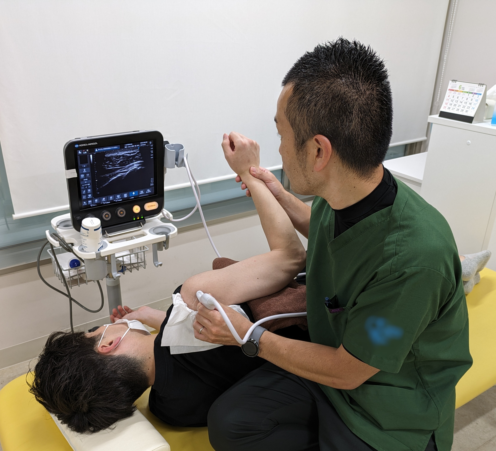

自己紹介
こんにちは、マキです。
外来整形外科一筋で15年臨床に携わってきました。
運動器エコーを使用した臨床を実践しています！
副業をきっかけにWebへチャレンジしてます。
HP制作＆アプリ制作など頑張ります！
プログラミング初心者
趣味でWebやってますと言えるように,そして更に趣味が仕事に
- 出身：千葉
- 資格：理学療法士（認定：スポーツ理学療法/運動器は失効（笑）
- 好きなこと：散歩・旅行・怪獣達3人と遊ぶ

理学療法士とは
理学療法士（Physical Therapist）は、けがや病気、加齢などによって
身体に不自由が生じた方に対して、運動療法や物理療法を用いて
「動く力を取り戻す」サポートをする国家資格です。
具体的には、関節の動きを改善するリハビリ、歩行や姿勢の指導、筋力トレーニング、
スポーツ復帰への支援など、多岐にわたります。
私は外来整形外科で勤務し、運動器エコーを活用した臨床や、
痛みの原因を見極めるための評価を大切にしています。
「治す」だけでなく、「再発を防ぐ」・「動ける体を保つ」ことを目標に日々取り組んでいます。
ケガや病気をみるのではなく人をみることを心がけています。
趣味
目標
web制作を学ぶ！そして実務に繋げる！